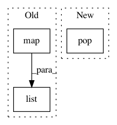

0cada51f2561f9965612e8179b426727db71eb26,yellowbrick/base.py,MultiModelMixin,__init__,#MultiModelMixin#Any#Any#,382
Before Change
// Keep track of the models
self.models = models
self.names = kwargs.pop("names", list(map(get_model_name, models)))
def generate_subplots(self):
After Change
def __init__(self, ax=None, fig=None, **kwargs):
self.ax = ax
self.fig = fig
self.size = kwargs.pop("size", None)
self.color = kwargs.pop("color", None)
self.title = kwargs.pop("title", None)
//// ////////////////////////////////////////////////////////////////////
In pattern: SUPERPATTERN
Frequency: 3
Non-data size: 3
Instances
Project Name: DistrictDataLabs/yellowbrick
Commit Name: 0cada51f2561f9965612e8179b426727db71eb26
Time: 2019-07-29
Author: rebeccabilbro@users.noreply.github.com
File Name: yellowbrick/base.py
Class Name: MultiModelMixin
Method Name: __init__
Project Name: scikit-image/scikit-image
Commit Name: 2c54b7780fbb59cbb6ba02df39b9f7fe035134d3
Time: 2016-09-16
Author: paalge@gmail.com
File Name: skimage/segmentation/active_contour_model.py
Class Name:
Method Name: active_contour
Project Name: scikit-image/scikit-image
Commit Name: 2c54b7780fbb59cbb6ba02df39b9f7fe035134d3
Time: 2016-09-16
Author: paalge@gmail.com
File Name: doc/examples/edges/plot_active_contours.py
Class Name:
Method Name: